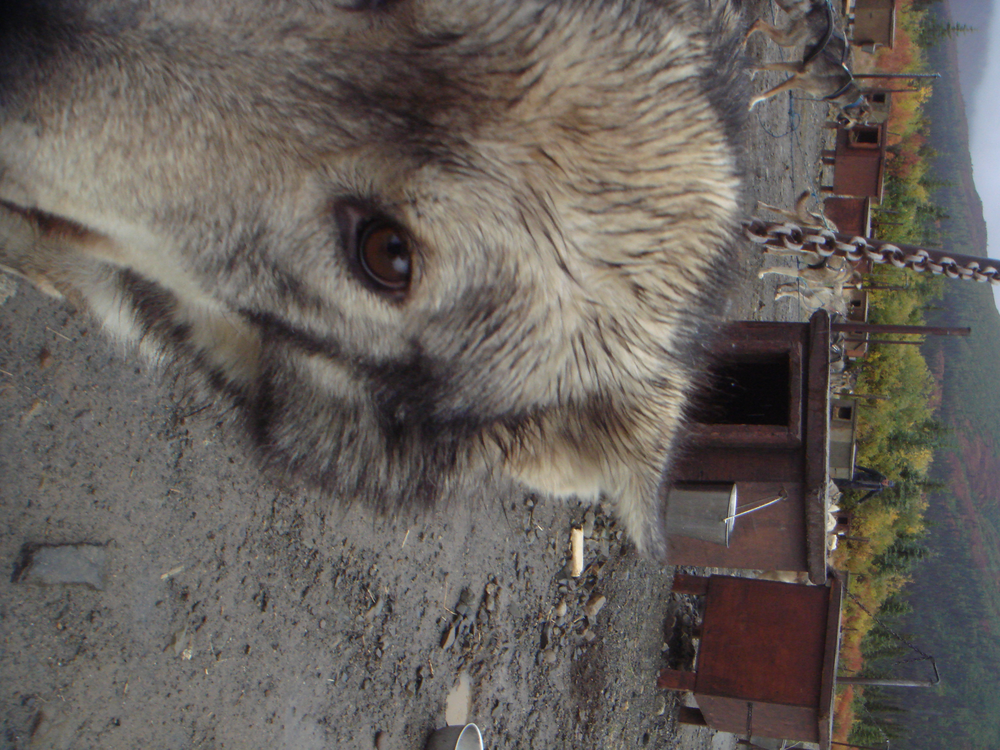
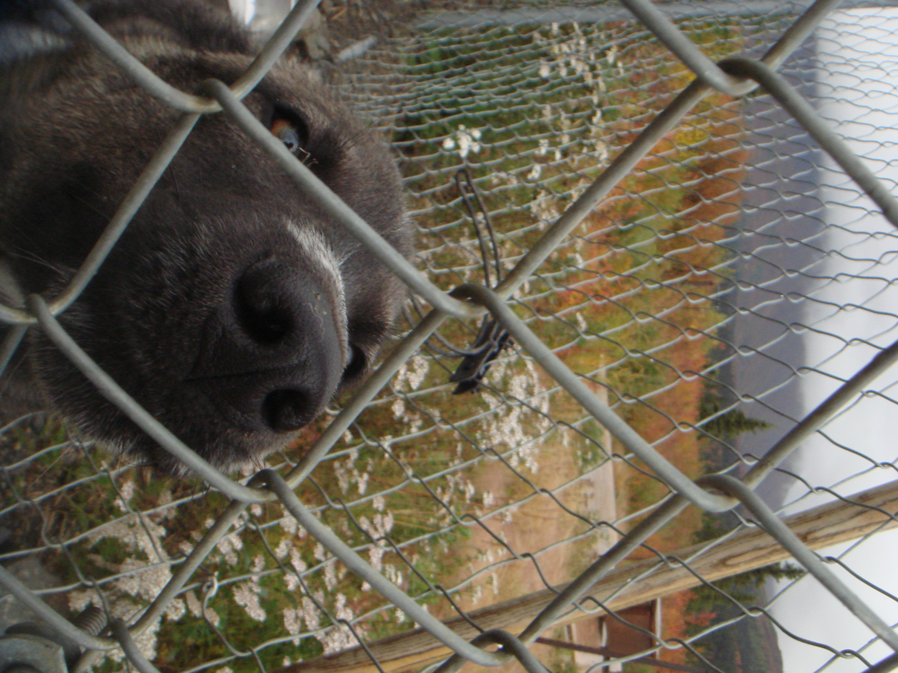

updated... 3/1/26


me in my apartment, sitting on the floor, hangin' out with my TV
HEY! YOU!
hi.... I'm Lu. I write stuff and make music and draw
and paint and take pictures and I made this web site.
WHY FUCKTHEINTERNET?
"In early September of 2024, I bought a little digital camera off the internet..." Read More


© 2023 - 2025 fucktheinternet.wiki - All Rights Reserved.